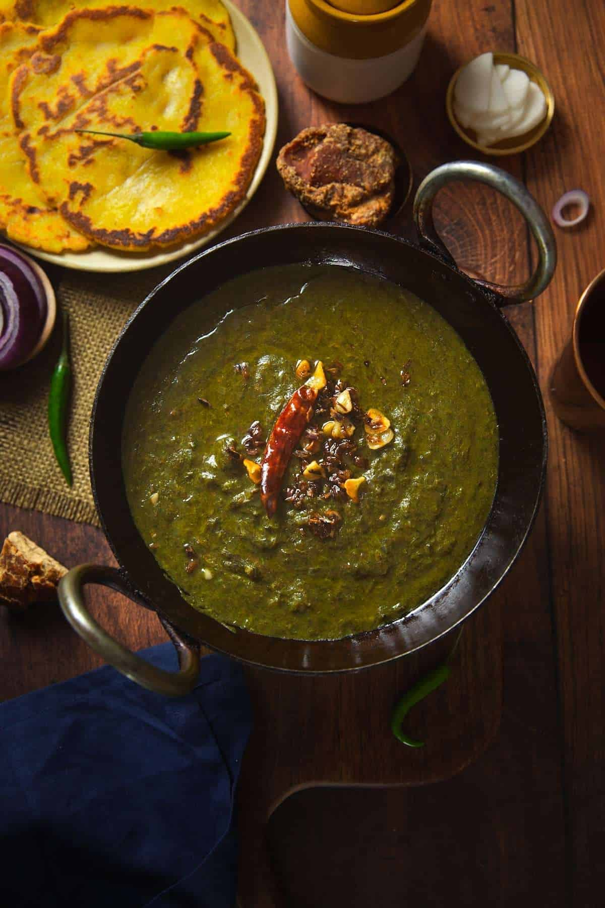
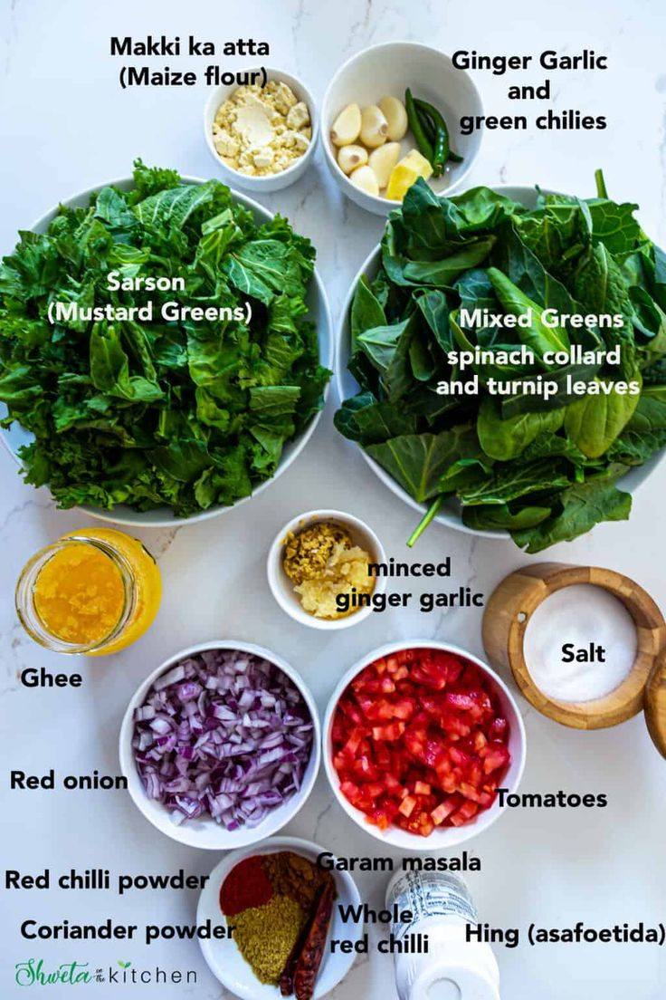
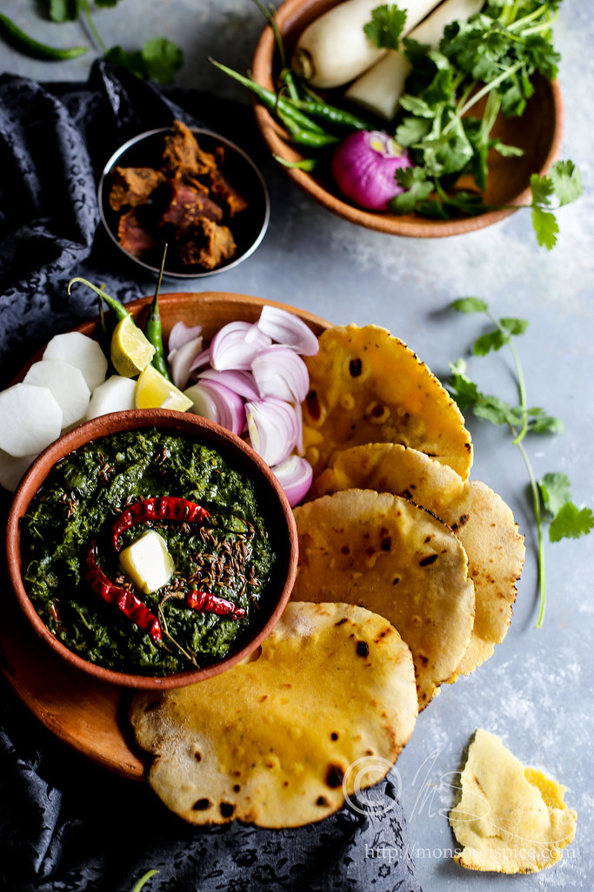

Ingredients:
- 500g mustard greens (sarson)
- 250g spinach leaves
- 2 green chilies, chopped
- 1 onion, chopped
- 2 tomatoes, chopped
- 3 cloves garlic, minced
- 1-inch ginger, grated
- 1 teaspoon cumin seeds
- 1 teaspoon red chili powder
- 1/2 cup ghee
- Salt to taste
Instructions:
- Thoroughly wash the mustard greens and spinach leaves.
- Finely chop the greens, onion, tomatoes, green chilies, garlic, and ginger.
- In a large pot, heat ghee over medium heat.
- Add cumin seeds and allow them to splutter.
- Add chopped garlic and ginger, and sauté until golden brown.
- Add chopped onion and cook until translucent.
- Add chopped tomatoes and green chilies, and cook until tomatoes are soft.
- Add mustard greens and spinach leaves to the pot. Cook until wilted.
- Add red chili powder and salt to taste. Mix well.
- Mash the cooked greens using a potato masher or immersion blender until desired consistency is achieved.
- Cook the saag for another 10-15 minutes, stirring occasionally.
- Once done, serve hot with makki di roti (cornbread) and a dollop of butter.
Back to Home